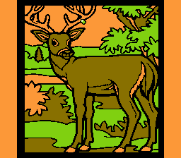

Color a Deer
A shitty coloring activity.

I made this in a few hours to demonstrate a fast way to do flood-fill on the NES. Funnily enough, it was part of an art exihibit in NYC.
- D-Pad moves Cursor.
- A button paints color.
- Select button changes marker color.
[More NES games] [Back to my homepage]